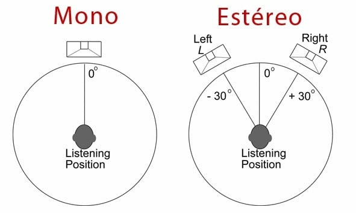
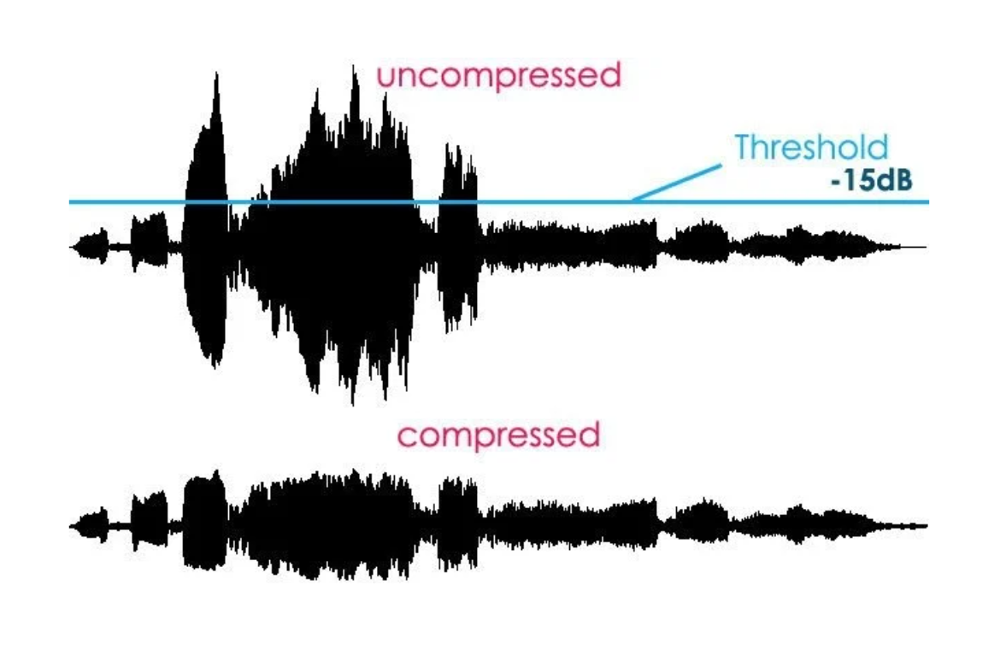
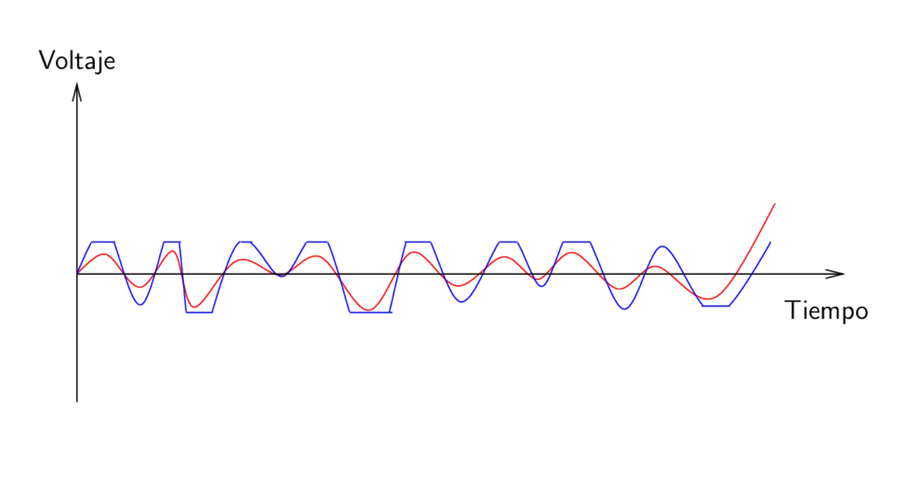
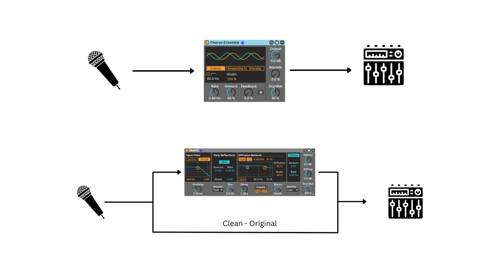

Un efecto de audio es cualquier proceso que transforma una señal de sonido: la mueve en el espacio, le da forma en frecuencias, la comprime, la ensucia o la duplica. No añaden magia de la nada — trabajan con lo que ya está grabado para darle carácter, espacio y personalidad. Saber qué hace cada uno (y cuándo usarlo) es una de esas cosas que cambian por completo cómo suenan tus mezclas.
Aquí van los efectos más importantes que vas a encontrarte trabajando en Ableton, organizados por familias, y al final las dos formas distintas de aplicarlos en tu proyecto.
Trabajan directamente sobre el contenido en frecuencias o en la posición estéreo de un sonido, sin tocar el tiempo ni la dinámica.
El paneo distribuye una señal en el campo estéreo, entre el altavoz izquierdo y el derecho. En el centro es habitual dejar los elementos de frecuencias más graves (bajo, bombo) y los elementos principales (voz). El resto de instrumentos se reparten hacia los lados — y conviene mantener el equilibrio: si mandas algo ligeramente a la derecha, busca algo de frecuencia parecida para el lado contrario, así la mezcla no se siente coja.

Mono vs. estéreo: en mono todo llega desde un único punto; en estéreo puedes repartir los sonidos entre izquierda y derecha.
La EQ recorta o amplifica frecuencias concretas del espectro. Piénsala como escultura: no añade frecuencias nuevas, da forma a las que ya existen en tu sonido. Es una herramienta clave para hacer sitio a cada elemento de la mezcla (que el bajo y el bombo no se pisen, por ejemplo), para limpiar ruido indeseado, y para realzar lo que sí quieres que se note.
Estos trabajan repitiendo o retrasando la señal original en el tiempo, creando sensación de espacio o de eco.
Cuando un sonido ocurre, pasan dos cosas: el sonido directo llega a tus oídos, y a la vez un montón de reflexiones rebotan por las superficies de alrededor antes de llegar también. La reverb es justamente eso — un montón de ecos ocurriendo casi a la vez, que percibimos como un único efecto continuo. Se usa sobre todo para dar espacio, plenitud y profundidad: hace que un sonido suene más grande o más "colocado" dentro de una habitación imaginaria.
El delay graba la señal y la repite después de un tiempo determinado — desde milisegundos hasta compases enteros sincronizados con el tempo de la canción (1/4, 1/8...). Es, de hecho, el origen técnico de otros efectos como el chorus o la propia reverb. Se usa tanto de forma creativa (repeticiones rítmicas evidentes) como para ampliar o dar profundidad a una señal de forma más sutil.
Actúan sobre el volumen de la señal según el momento, no sobre su contenido en frecuencias.
La compresión reduce el rango dinámico de una señal — la diferencia entre sus partes más fuertes y las más suaves. Al comprimir, las partes flojas se amplifican relativamente y las fuertes se atenúan. Bien usada, da pegada y precisión, permite subir el volumen medio general, y es un elemento básico en prácticamente cualquier mezcla con instrumentos grabados.

La señal sin comprimir (arriba) tiene picos muy por encima del threshold; una vez comprimida (abajo), esos picos se atenúan y el conjunto queda más uniforme.
La distorsión fuerza al sonido a "recortarse" (hacer clip) y comprimirse de forma agresiva, lo que añade contenido armónico nuevo y color a la señal. Cada tipo de circuito produce un sabor distinto. Se usa mucho en guitarras eléctricas y, cada vez más, en sintetizadores — añade fuerza, presencia y complejidad, aunque conviene dosificarla para no perder claridad en la mezcla.

La onda original (roja) se recorta al forzarla más allá de su límite, generando la forma cuadrada (azul) característica del clipping.
Se basan en duplicar la señal y mover ligeramente esa copia (en tono o en tiempo) frente a la original.
El chorus aparece cuando sonidos casi idénticos, con variaciones muy leves de tono y de tiempo, se superponen y se escuchan como una única voz más rica. Técnicamente, el procesador crea copias de la señal original y les aplica pequeños delays y modulaciones de tono. Es un efecto muy asociado a la estética de los 80.
El phaser dobla la señal y le aplica un cambio de fase a la copia. El flanger hace algo parecido pero duplicando la onda y aplicando a la copia un retraso menor de 5 milisegundos — el resultado es ese característico sonido metalizado y oscilante en frecuencias medias-altas. Ambos son habituales en guitarras y sintetizadores, y dan ese carácter acuoso o psicodélico tan reconocible en discos de funk y rock desde los 70.
Más allá de qué efecto elijas, hay una decisión igual de importante: cómo lo colocas en tu sesión. Hay dos formas, y cada una tiene su momento.
Un inserto aplica el efecto directamente y en serie sobre una pista, modificando el sonido base. El balance entre la señal original y la procesada se controla con el propio dry/wet del efecto. Úsalo cuando el efecto deba ser parte intrínseca del sonido de esa pista, alterando su timbre o su dinámica de fondo — por ejemplo EQ, compresión, chorus o distorsión.
Un envío manda una copia de la señal a un canal auxiliar aparte, donde se aplica el efecto solo a esa copia — la señal original queda intacta. El balance se controla con el volumen de esa pista de efecto. Es la forma natural de trabajar cuando quieres aplicar un mismo efecto (como una reverb) a varias pistas a la vez, o cuando el efecto debe sonar mezclado en paralelo con el original, como suele pasar con reverbs, delays o compresión paralela.

Arriba, inserto: la señal pasa por el efecto en serie. Abajo, envío: una copia va al efecto mientras la señal original ("Clean - Original") sigue su camino intacta.
Canales de retorno: procesamiento en paralelo en un canal dedicado, al que puedes mandar todas las pistas de tu proyecto que quieras que compartan ese mismo efecto — muy típico para una única reverb que usan varias pistas a la vez.
Audio effect rack: procesamiento en paralelo montado dentro de la propia pista de instrumento. En este caso el efecto solo podrá usarse en esa pista concreta.
Todo esto lo trabajamos con calma y en la práctica, sobre proyectos reales, en la Escuela de Sonido de IRL Estudios.
Para más info escríbenos a nuestro mail: irlestudiosmadrid@gmail.com